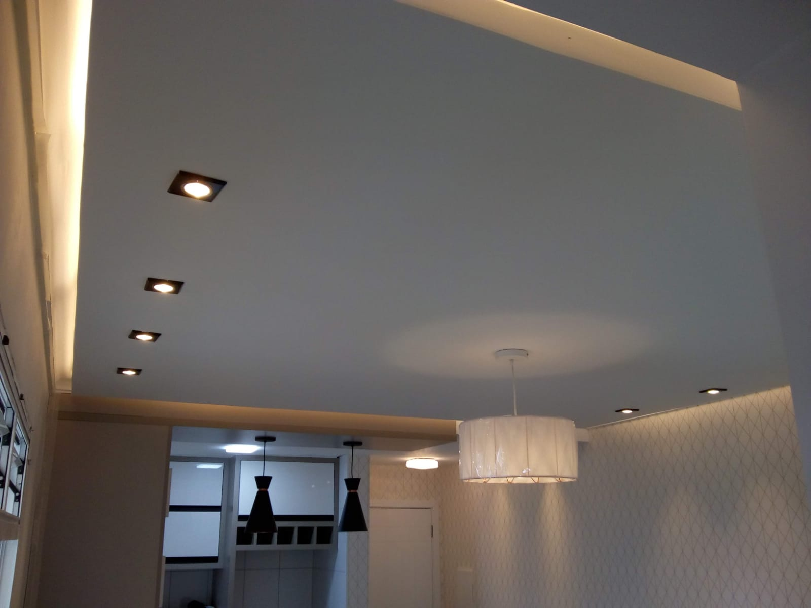
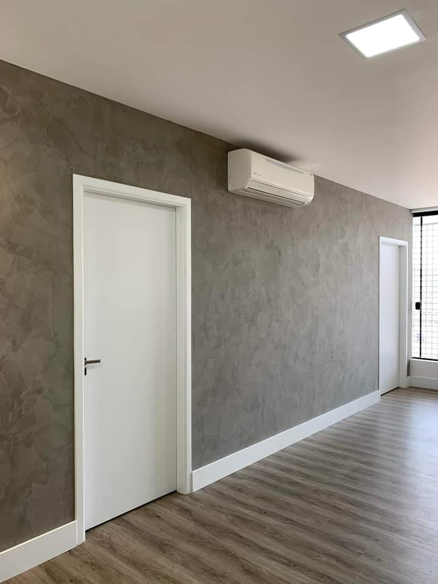
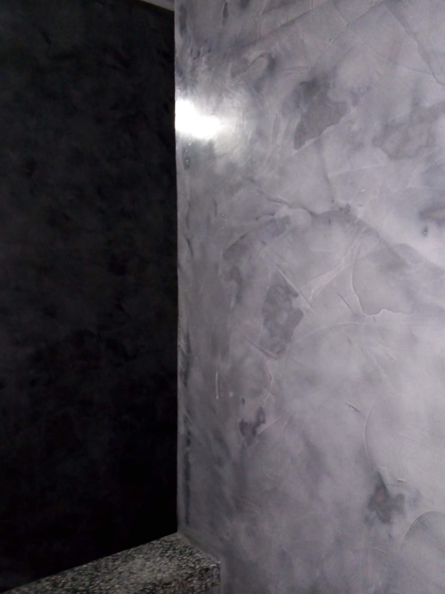
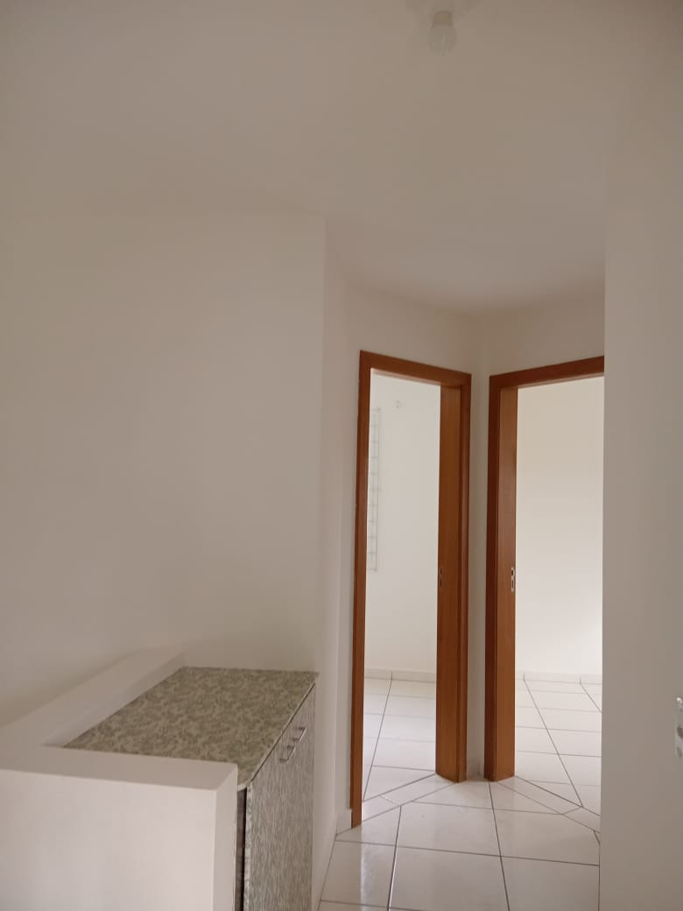
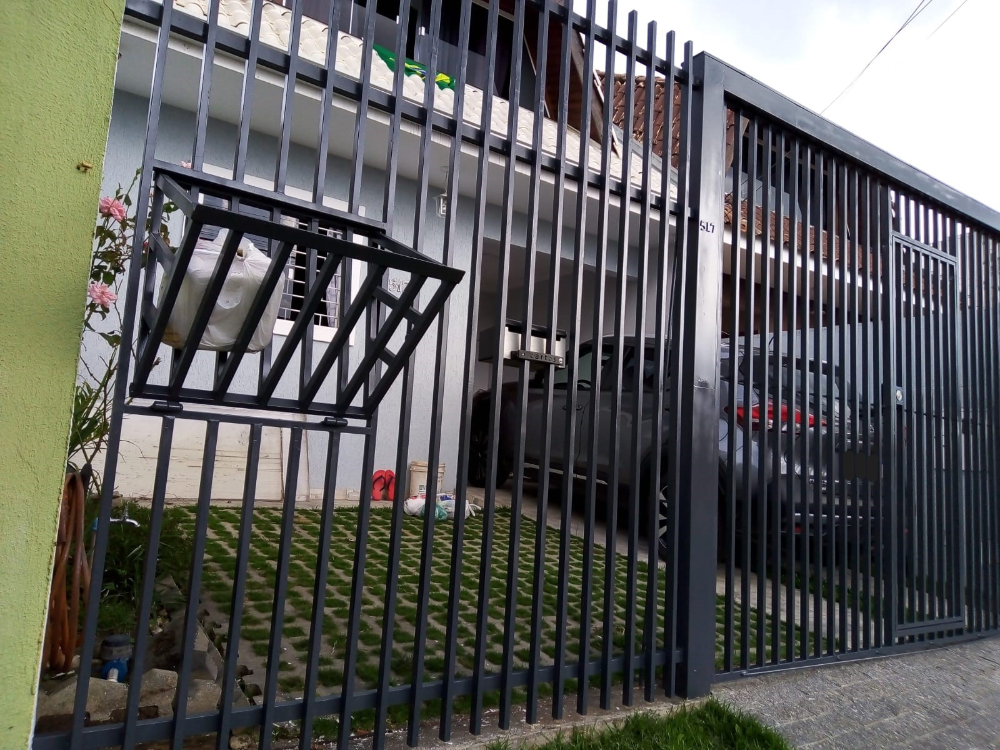

Acabamento fino é a aplicação de massa corrida em paredes de alvenaria ou dry wall para obter um acabamento perfeito e valorizar o imóvel.
Cimento queimado

Cimento queimado é um efeito decorativo que está em alta no ramo imobiliário, para quem busca algo sofisticado mas não tão rústico.
Marmorizado

O efeito marmorizado trata-se de uma técnica onde busca ressaltar as cores e traços marcantes da pedra ficando com uma aparência próxima da mármore original.
Pintura lisa

Pintura lisa é a pintura padrão tradicional com tinta acrílica, sempre bem preparado e aplicado em paredes, tetos e rodas pés.
Retoque para vistoria imobiliaria
Pintura de entrega de imóvel para a imobiliária ou direto ao proprietário.
É feita uma pintura completa de tetos, paredes e rodapés na mesma cor contratual do inquilino, entregamos pronto para você agendar a vistoria imobiliaria.
Pintura de portões e grades

Para esse tipo de pintura é comum ser utilizado esmalte sintético a base de água, é uma boa escolha para ser utilizado em portas, janelas e grades.